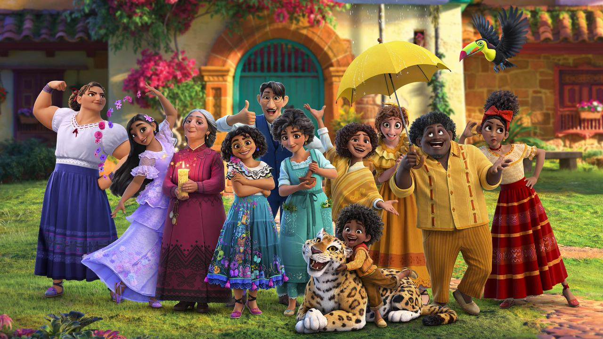

About Mirabel
Mirabel lives in Colombia with her family who has super powers to help their village but is the only one with no powers and wants to save the miracle from being destroyed. She just wants to make her family proud.
La Familia Madrigal
Mirabel's Characteristics
- She loves her family and wants to make them proud.
- She is the only Madrigal with no powers.
- She wants to save the miracle and her family.